Chapter 9 — The Proxy You Didn't Write
Priya Sharma had been at Glasshouse for exactly one day and four hours when she stopped standup dead.
"Quick one," she said, in the tone of someone who assumed it would be. "I've been reading the triage flow. ReportRepository is an interface. Where's the implementation? I've been looking for an hour, and I'd like to know what I'm doing wrong before I spend a second one."
Silence. Eight engineers around a kanban board, seven years of accumulated folklore, and not one of them could point to a class. Marisol's entire triage queue ran through that repository. Half a year of incidents had been debugged on top of it. Nobody had ever opened its implementation, because there wasn't one to open.
Maya opened her mouth — and caught Elias's eye across the room. A small shake of the head. Afterward, by the kettle, he was explicit. "Don't tell her. Show her how to find out." A pause. "She's yours, by the way. Onboarding buddy. I've already updated the doc."
Eight years of Java and one year of Spring, and my first official act as a mentor is a question I would have flunked in January. At Meridian, the data layer was the one place "where's the implementation?" always had an answer: every query a string of SQL she'd typed, every row-to-object mapping a loop with her name on the commit. Here, apparently, the repository was the magic — and Maya realized she'd been trusting it the way she'd once trusted Boot's startup wiring — auto-configuration conjuring beans off the classpath — politely, and without evidence.
The investigation
They did it the honest way: a breakpoint and a debugger, Priya driving.
Inside TriageWorkflow, where ReportRepository arrived through the constructor, Priya evaluated reportRepository.getClass().
"jdk.proxy3.$Proxy187," she read. "That's not a class. That's an apology."
"It's a JDK dynamic proxy," Maya said. "Spring Data registered a factory bean for your interface at startup. The bean it produces is a proxy that implements ReportRepository — nobody wrote it, it was generated. Step into findById and keep going past the interceptors."
Priya stepped. Three frames of plumbing, and then a real class with real code: SimpleJpaRepository, calling EntityManager.find. "Okay. So that's the implementation. For findById, save, the CRUD set."
"For the methods Spring Data ships. Now the interesting half." Maya scrolled to the methods that existed nowhere at all:
public interface ReportRepository extends JpaRepository<Report, UUID> {
// The "latest activity" widget. Compiles. Passed its test.
Optional<Report> findTopByProgramIdOrderByCreatedAt(UUID programId);
// The reports list. Every page of the infinite scroll pays for this.
Page<Report> findByProgramIdAndStatus(UUID programId,
ReportStatus status,
Pageable pageable);
}
"There's no SimpleJpaRepository method called findTopByProgramIdOrderByCreatedAt," Maya said. "At startup, Spring Data parsed the method name." She dropped a breakpoint in the framework's PartTree constructor and restarted the app. They watched the string go in and a parse tree come out: find, top one, by programId, order by createdAt. Every property was checked against the entity metamodel. The whole thing was compiled into JPQL before the first request ever arrived. "The method name is the query. It's not magic. Let me show you the mechanism."
She heard the sentence as it left her mouth, and stopped. Six months of Elias's green ink, and the catchphrase had changed hands without asking either of them.
Priya, mercifully, was already squinting at the widget code. "Wait. Order by createdAt... which direction?"
⏸ Your call. The build is green and the one-row test has passed for months — before Maya answers: what is
findTopByProgramIdOrderByCreatedAtactually returning, why has no test objected, and which -ility got sold when a query became a sentence the compiler doesn't speak?
Which is how, on day four, Priya found the bug everyone senior had missed. The "latest activity" widget on every program dashboard had been showing a report from 2019 for months. OrderByCreatedAt with no Desc is valid in Spring Data's grammar, and the default direction is ascending. Top one of ascending is the oldest. The unit test had a single-row fixture, and one row passes any ORDER BY ever written.
"The method name compiles," Priya said slowly. "It just answers a different question."
That was the part that itched at Maya's hand-wired instincts. The Java compiler only checks that the method name is legal Java; it knows nothing about what the name means. The startup parser does validate the pieces — misspell a property as findByTtile and the context fails fast at boot — but it cannot catch a name that parses cleanly and means the wrong thing. At Meridian a query was a string of SQL the compiler never vouched for, so nobody expected it to: you read the ORDER BY with your own eyes and ran it against real rows before you trusted it. Here the green build had felt like proof, and that reflex was the trap — a derived query is a sentence in a language the Java compiler doesn't speak.
(If you committed at the pause: ascending, so the oldest; one row blesses every sort. The -ility is the deeper cut — Maya names it at the Wall.)
While they were in the logs with show-sql on, Priya asked the second question. "Why does the reports list run two queries per page?"
There it was, under every Page<Report>: the SELECT they asked for, and a SELECT count(*) over the whole filtered set that nobody had. The count exists so Page can report totalElements and totalPages, and it runs on every request. On the researcher-facing infinite scroll, nothing ever displayed a total. They were paying for a number they threw away, on every scroll event, against the platform's biggest table.
What the senior sees
At the Wall, under the smoke-cloud proxy drawing with its caption — this. goes around the mirror — Maya gave Priya the stack, top to bottom — "one breath per layer," she promised.
Priya had stopped under the cloud first — she'd read the February postmortem the way new hires read ghost stories. "That's the transaction proxy. The one the bean walked around by calling itself."
"February's ghost in a new coat," Maya said. "That one was CGLIB around a class we wrote, and a this. call never crosses the wrapper — the advice silently never runs. Today's coat has nobody inside it at all. Atrium is full of objects nobody wrote; same lesson, new machinery."
A Spring Data repository is three dispatch rules behind one proxy. CRUD methods route to SimpleJpaRepository. Methods carrying @Query run exactly what you declared — JPQL usually, native SQL when you genuinely need Postgres-specific reach — with named parameters bound by @Param, not by position. Everything else goes through name derivation: parsed once at startup, validated against entity properties, compiled to JPQL. The boot-time validation is the trade you're making — property names are checked, intent is not.
So the team needed a ladder, not a ban. Derived names for the trivial cases. Past that, write the query:
public interface ReportRepository extends JpaRepository<Report, UUID> {
Optional<ReportSummary> findTopByProgramIdOrderByCreatedAtDesc(UUID programId);
// Infinite scroll: Slice fetches size + 1 and answers hasNext — no COUNT.
Slice<ReportSummary> findByProgramIdAndStatus(UUID programId,
ReportStatus status,
Pageable pageable);
// House rule: past two predicates the query is written, not derived.
// Ordering is pinned here; the Pageable only supplies the window.
@Query("""
select new com.glasshouse.atrium.report.ReportSummary(
r.id, r.title, r.severity, r.status, r.createdAt)
from Report r
where r.program.id = :programId
and r.status = :status
and r.createdAt >= :since
order by r.createdAt desc
""")
Slice<ReportSummary> findRecentForTriage(@Param("programId") UUID programId,
@Param("status") ReportStatus status,
@Param("since") Instant since,
Pageable pageable);
}
ReportSummary was a record — five fields, constructed straight from the select clause. "A projection," Maya said. "The query returns exactly these columns, the database does the narrowing, and there's no entity in sight. No entity means no lazy fields waiting to detonate after the session closes, and no over-fetching forty columns to show five. Remember the thousand tiny queries in May? Projections close off that whole family at the boundary." (May, if you skipped it: a loop touched a lazy association on every row — one extra SELECT apiece, a thousand queries for one screen.)
"There are interface projections too," she added, "where Spring generates — yes, another proxy — backed by just the selected columns. Closed ones, where every getter maps to a property, stay efficient. Open ones, with @Value SpEL expressions, quietly fetch the whole entity to evaluate the expression, which un-fixes everything you fixed. We use records. They can't lie."
Priya pointed at the triage search screen spec — severity, status, program, researcher, date range, any combination. "Derived name for that would be a paragraph."
"That's where derivation stops being clever and starts being a hostage note. Dynamic predicates get a custom repository fragment — you write an interface, an Impl class, and Spring Data composes it into the same proxy — built on Specifications or Querydsl, both of which are just composable where-clauses as objects." One breath, as promised.
"And why does any of this need a persistence context underneath?" Priya asked. "Why not just... SQL?"
"Because we chose this engine, and it's worth knowing we chose it. Spring Data JPA rides Hibernate: persistence context, dirty checking, lazy loading — all the power, and all the traps that come with a session. Spring Data JDBC is the same repository grammar with that whole layer deleted — no session, no lazy anything; you load and save whole aggregates, and what you fetched is all you have. For a module with small aggregates and no appetite for surprises, that honesty is a feature. Spring Data Mongo is the grammar again over documents — no joins, so the document has to be the aggregate, modeled for the access pattern, or you suffer. Same interfaces, three engines; the grammar being identical is exactly why you have to know which one you're holding. Atrium's core is relational and shared — it stays JPA."
The architecture under the repositories
Before they left the Wall, Priya pointed at the project tree. "Eleven repositories. Nine tables. Smell, or coincidence?"
"Autopsy," Maya said. "They grew one per table, and per-table repositories are how the graph wins: every query starts anywhere, reaches anything — the soil May's thousand queries grew in. Nobody ever decided what the unit was — and the unit we keep consistent, and change, isn't a table." She took the marker and drew three boxes where there had only ever been entity arrows:

"Report owns its Activity rows. There's an invariant between them — a report's status has to agree with its latest activity — and the lost-update week taught us what guards an invariant: one transaction. So they share a boundary, loaded and committed together; the aggregate is the transaction's natural span. Program and Researcher are other aggregates: a Report carries a programId, never a Program — the @ManyToOne stays mapped, that's just how the foreign key gets written and why findRecentForTriage can say r.program.id, but the rule governs navigation: no code outside a declared read-model query traverses that association across an aggregate line, and domain logic sees only the ID. Inside a boundary, invariants and one transaction; between boundaries, IDs — and, when it matters, eventual consistency."
(The lost-update week, for late joiners: two transactions read the same row, both wrote, and the second silently won — until a @Version check made the race loud.)
"That's DDD," Priya said, in the tone of someone identifying a diet.
"The ten percent that pays rent here: aggregates, and the words. Report, Triage, Disclosure — the vocabulary on this wall is the API of the domain; the day the code says SubmissionRecordDTO and Marisol says report, every meeting pays a translation tax. And Spring Data JDBC? It's this picture enforced — whole aggregates in and out, no lazy graph, because it refuses to believe in one. Who polices the boundary — the framework, or the review — is an architectural choice, not a library preference. We keep the engine and adopt the worldview: repositories per aggregate root, three, not eleven, and reads across a line become projections on purpose. The -ility this week has been circling: evolvability of the data model — the aggregate as the unit of consistency and of change."
Elias drifted past with a teabag and looked at the three boxes considerably longer than the tea required. "Leave those lines up," was all he said. Nobody had a name yet for the map the Wall had just started drawing. (Chapter 14 does.)
Migration day
Friday, 4:55 p.m., the deploy pipeline went red:
Migration checksum mismatch for migration version 41
-> Applied to database : 1486912852
-> Resolved locally : 89004127
Either revert the changes to the migration, or run repair to update the schema history.
Someone — in fairness, someone moving fast in a team that was suddenly bigger and shipping faster — had "fixed a typo" in V41__add_report_indexes.sql. An index name, cosmetic, already applied to production weeks ago. Flyway records a checksum in flyway_schema_history the moment a versioned migration is applied. From that point the file stops being code and becomes a historical record. Edit history, and validation calls you a liar.
"flyway repair takes thirty seconds," somebody offered, eyeing the clock.
⏸ Your call. 4:55 p.m., pipeline red,
flyway repairis thirty seconds away and so is the weekend. Repair now or investigate first — and name the one thingrepaircan never tell you. Commit.
Idris put the brick on the table. "We can repair the checksum in thirty seconds, or we can know what we're repairing in thirty minutes. One of those happens again at 3 a.m."
Thirty minutes, then: confirm the edit was genuinely cosmetic by diffing the applied SQL against the file, revert the file to match history exactly, and ship the rename as V42 — forward, versioned, boring. The rules went in the runbook before anyone went home: never edit an applied migration; fixes roll forward as new versions; views and functions live in R__ repeatable scripts, which re-run when their checksum changes by design. ("Liquibase, if you're wondering," Maya told Priya, "is the same discipline with a changelog abstraction and rollback choreography — we run Flyway because plain SQL is what we'd be reading at 3 a.m. anyway.")
"Append-only," Idris said, underlining it, "because a versioned migration is a one-way door — walk through, it locks; want something different, take the next door." Then he made it arithmetic. Eight pods, one schema, no maintenance window, every environment replaying the same history in order. Schema evolvability under continuous deploy depends on every database having run the identical sequence of files — which means never rewriting the past. Edit an applied migration and you haven't fixed history — you've forked it: a checksum mismatch if you're lucky, silent staging-production drift if you're not.
And since everyone was already in a room being honest, Maya pulled up the scaling plan and finally did the arithmetic nobody had done in seven years. Each Atrium pod ran Tomcat's 200 worker threads over Hikari's default pool of ten connections. Eight pods × 10 = 80 of Postgres's max_connections = 100. The autoscaling proposal said twelve pods. 120 > 100. The new pods wouldn't make the platform faster; they'd make Postgres start refusing connections — sorry, too many clients already — for everyone, including the healthy pods.
At Meridian there had been no pool to size — DriverManager.getConnection, used, closed, a fresh handshake per query — and nobody ever counted connections, because freight traffic never made anyone. The per-pod story was worse. Under burst, 200 threads contend for ten connections. The losers queue at the pool, time out after Hikari's default thirty seconds, and throw SQLTransientConnectionException — while the database sits at 4% CPU. The pool is sized by the database's limits and the contention in front of it, not by anybody's CPU count. Pool exhaustion is an outage that impersonates a slow database.
It was launch day's equation one layer down — the 503s with idle CPUs, every Tomcat worker parked on one slow vendor. The same math applied here: 200 threads, a query or three behind each Page, funneling into ten connections under a ceiling of a hundred. The queue hadn't gone away; it had simply moved from the connector to Hikari.
The fix
spring:
datasource:
hikari:
maximum-pool-size: 10 # 8 pods x 10 = 80; Postgres max_connections = 100,
# minus headroom for migrations, ops psql, and one emergency
connection-timeout: 3000 # starve fast and visibly, not at 30s in silence
jpa:
open-in-view: false # still false; projections made it painless
The pull request that closed the week carried more documentation than code. The derived-query rule: explicit @Query past two predicates, and every OrderBy names its direction. Any test of ordering needs at least two rows, out of order — one-row fixtures bless every sort ever written. List endpoints return Slice unless the UI genuinely shows a total; Page costs a COUNT, so it has to be a choice, not a default. Read paths return projections; entities don't cross the service boundary — the last clause of a lesson Maya had been learning since her first green-ink review. Flyway discipline, written down. Hikari, sized by arithmetic instead of superstition, with the scaling plan corrected before it became somebody's 3 a.m. page.
On top sat half a page in docs/adr/ — the week's real decision, made durable:
ADR-009 — Aggregate boundaries. Context: Repositories had grown one-per-table, queries reached across the object graph from anywhere to anywhere, and pagination and pool sizing both fell over when real data arrived. Decision: Repositories exist per aggregate root —
Program,Report(owningActivity),Researcher— never per table; cross-aggregate reads go through projections and read models, never object-graph traversal; references between aggregates are by ID; Flyway migrations are append-only; the Hikari pool is sized from Postgres'smax_connectionsand the launch-day thread math, arithmetic recorded here rather than in folklore. Consequences: The aggregate becomes the transaction's natural boundary — the invariant unit ADR-008 demanded — and a candidate border for whatever Atrium grows into next; the accepted cost: convenient cross-aggregateJOINs stop being free and become deliberate read-model decisions.
The widget fix itself was one word — Desc — and a two-row test. Priya shipped it, four days into the job, with a commit message Maya didn't edit: "Top of ascending is the oldest. Ask me how I know."
⚖ Your move, architect
The lines on the Wall created an immediate problem: the program dashboard reads across all three boxes — reports, researcher names, severity rollups. Yesterday that was one cheerful JOIN through the object graph. Commit before reading on: how do dashboards read across aggregates now?
- A — A projection per view. Each dashboard gets its own record read model: one query, exactly its columns, owned by the view.
- B — Entity-graph traversal with clever fetching. Keep the object graph for reads;
JOIN FETCHand@EntityGraphthe exact path each dashboard needs. - C — A separate read database, full CQRS. Writes hit the aggregates; a synchronized read store serves dashboards, shaped purely for reading.
The trade-offs, since you've committed: B re-couples every dashboard to the write model: each new widget needs its own fetch plan against entities whose job is guarding invariants, not rendering — and May already paid that bill: the thousand queries were graph-reads doing a view's job. A is what the team chose: one @Query and one record per view, cheap to add, cheap to delete, the write model free to evolve underneath — the evolvability the aggregates bought, actually spent. C buys the same separation with heavier machinery: synchronization, eventual-consistency UX, a second store to operate and page on — an operability tax. It becomes defensible when reads run orders of magnitude past writes — think 100×, a saturated replica, rollup queries throttling triage; until that signal arrives, C is a door A keeps purchasable. Lena's version went in the notes: "We buy the second database when a customer's dashboard is slow, not when a conference talk was good."
The following Wednesday, Priya gave the Wall tour — the onboarding rite, socket to database and back, every hop named out loud. When she reached the repository she added a hop the diagram hadn't had before: "...and the repository is a proxy nobody wrote, which is fine, because now we know who did." Elias watched Maya watch Priya, and wrote nothing down.
The team was bigger now, and faster. New v2 routes were landing weekly, quicker than any one person was reading them. That would matter soon. Not yet.
The debrief — Ch.9, The Proxy You Didn't Write
Where is the implementation of a Spring Data repository, and how does it execute your queries? Claim: There is no implementation class — Spring Data generates a proxy bean from the interface at runtime. Mechanism: A repository factory registers a JDK dynamic proxy implementing your interface; calls dispatch by rule — CRUD methods to
SimpleJpaRepository,@Querymethods to your declared JPQL or native SQL, and everything else through method-name derivation, parsed at startup into a query tree, validated against entity property names, and compiled to JPQL. Trade-off: Zero boilerplate and fail-fast validation of property names at boot — but the query lives in a method name, so the compiler checks Java grammar while nobody checks intent, and past two or three predicates the name becomes unreadable. Failure mode: A name that parses but means the wrong thing —OrderByCreatedAtwithoutDesc— compiles, passes a one-row test, and silently returns wrong data for months; the cure is explicit@Querypast two predicates and fixtures that can actually fail.
THE ARCHITECT'S LENS
- -ilities at stake: Evolvability of the data model — the aggregate as the unit of consistency and change: invariants inside one boundary, references by ID, read models keeping dashboards from freezing the write schema. Append-only migrations are the same -ility at the schema layer; the Hikari arithmetic is availability, bought with division instead of superstition.
- The ADR: ADR-009 — aggregate boundaries: repositories per aggregate root (
Program,Report+Activity,Researcher); cross-aggregate reads via projections, never graph traversal; references by ID; Flyway append-only; the pool sized frommax_connectionsand the thread math. - Rejected alternatives: per-table repositories with free graph reach (the default that grew — coupling nobody decided); entity-graph dashboards (May's bill, paid twice); full CQRS now (kept purchasable, its 100×-reads signal named in advance); wholesale Spring Data JDBC (boundary enforcement at the price of remapping the platform's core — the worldview was adoptable without the migration).
- Fight or lean: Lean on the generated machinery — derivation for trivial queries,
SimpleJpaRepositoryfor CRUD, Flyway's checksum as the guardian of history: when it calls you a liar, believe it. Fight the graph — JPA will cheerfully let every entity reach every other forever; the aggregate boundary is discipline the framework never enforces, which is why it lives in review and ADR-009, not in an annotation.
Story anchors
- Priya's hour-long hunt for a class that doesn't exist → the repository is a runtime-generated proxy: interface in, JDK proxy out,
SimpleJpaRepositorybehind it. - The 2019 report on the "latest activity" widget → derived-query names compile and parse, but nobody checks intent; missing
Descmeans top-of-ascending = oldest. - The 4:55 p.m. checksum standoff → applied migrations are history, not code: never edit one; roll forward with a new version, and
repaironly when you can explain what you're repairing. - Three chalk boxes on the Wall, arrows carrying only IDs → the aggregate is the unit of consistency (invariants inside, one transaction) and of change; cross-aggregate reads are read models, not graph reach — the first lines of what Chapter 14 will call a context map.
Interview ammo
- Kill-shot: You write a Spring Data repository interface with no implementation — what actually runs when you call
findByStatus(...), end to end? A startup-built JDK dynamic proxy dispatches the call: derivation parsed the method name into a query tree at boot, validated properties against the metamodel, and compiled JPQL that executes through the sharedEntityManager— CRUD methods route toSimpleJpaRepositoryinstead. - Follow-up: Why is
Pagethe wrong return type for infinite scroll, and what do you use? EveryPageruns a hiddenCOUNT(*)over the full filtered set to populate totals;Slicefetchessize + 1rows and answers onlyhasNext, so you skip the count you weren't displaying anyway. - Follow-up: How do you size a HikariCP pool, and what does exhaustion look like? By database arithmetic — pods × pool size + headroom ≤
max_connections, contention measured, never by app CPU count; exhaustion presents asSQLTransientConnectionExceptionafterconnection-timeoutwhile the DB idles — an outage impersonating a slow database. - Architect follow-up — Repositories: one per table, or one per what? One per aggregate root — the span of one transaction's invariants and the unit the model evolves by; cross-aggregate reads are explicit projections, references cross by ID — which makes today's aggregate tomorrow's candidate context, or service, boundary.
Pointers → Playbook Ch.8 · examples/ch08_data/